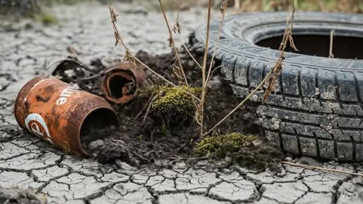
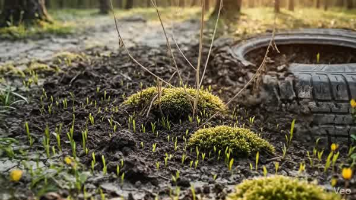
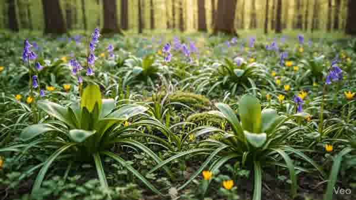
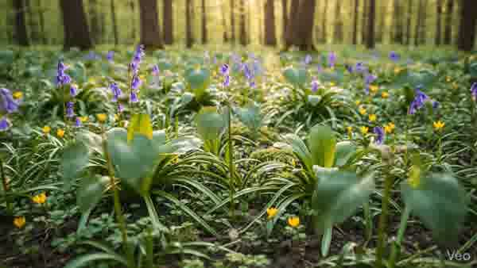

5. 實作效果：開發邏輯
Canvas 滾動觸發
ctx.drawImage(images[currentFrame], 0, 0);
// 根據 Scroll 進度切換索引
// 根據 Scroll 進度切換索引

IDE / CODE
實戰流程：從廢棄物到森林重生
在製作轉化動畫前，我們需要準備兩張關鍵素材：
FLOW ANIMATION PROMPT




AI 讓視覺敘事變得前所未有的簡單且強大。